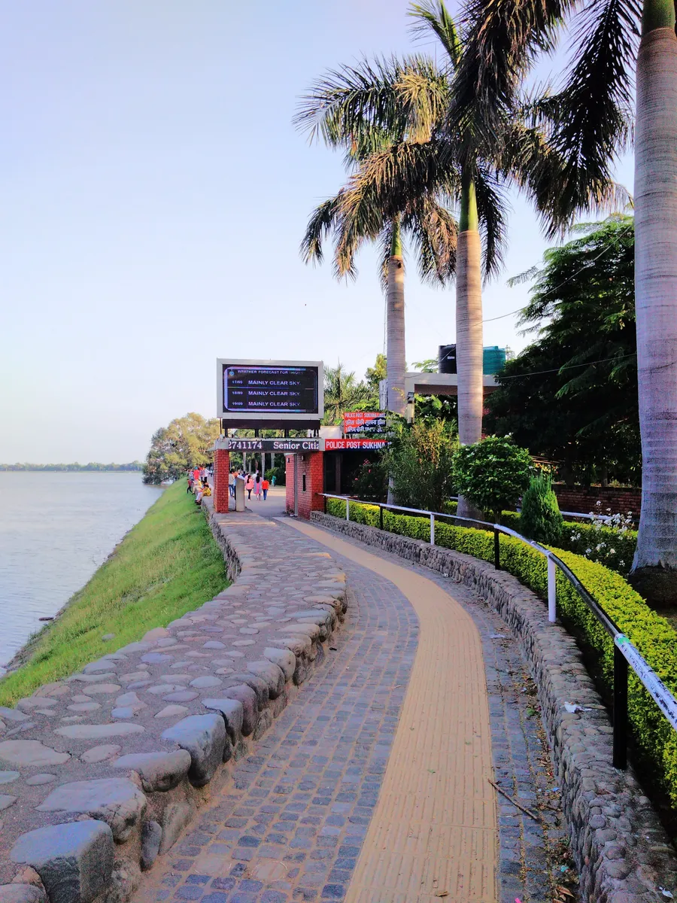

Sukhna Lake
Sukhna Lake is the most popular attraction of Chandigarh. I visited there in
the evening. There are many types of boats available for boating. I took a luxury boat that cost me
Rs 400. It was the best 30 minutes of my trip. Boating in the evening as the sun was hiding behind
the Shivalik hills was enthralling. Apart from boating there are also many other things to do in
Sukhna Lake like a kids amusement park, getting your portrait made, relax on the rock wall, and bird
watching.
The lake was created by Le Corbusier and the Chief Engineer P L Verma. To preserve its tranquility,
Corbusier insisted on two things: that it be forbidden for motor boats to circulate in the water,
and for vehicular traffic to be prohibited on top of the dam (promenade).The lake is fringed by a
golf course to the south, and Nek Chand's famous Rock Garden of Chandigarh to its west.
: March 2019
Read More ....
Date of experience: October 2022